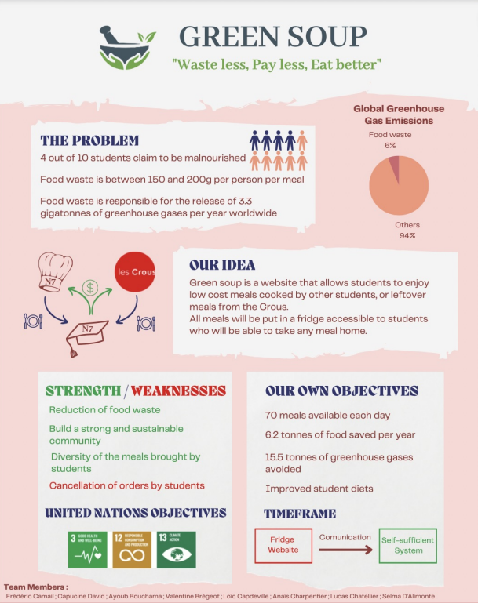
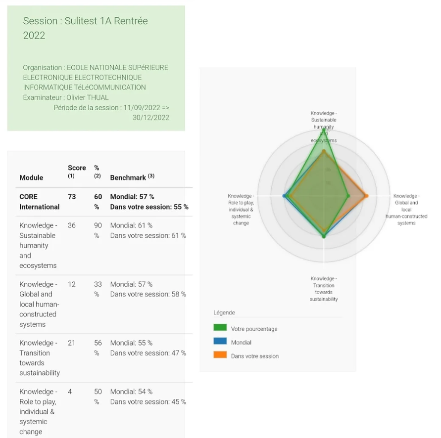

Sustainability & Civic Engagement Action
Welcome to the Sustainability & Civic Engagement Action section of my engineering eportfolio. In this section, you will find a collection of projects and initiatives that I have been involved in that focus on promoting sustainability and civic engagement within my community. From environmental conservation efforts to community development projects, I am committed to using my skills and knowledge as an engineer to make a positive impact on the world around me. Here you will discover my dedication, passion and expertise in this field, My goal is to raise awareness and inspire others to take action towards creating a more sustainable and engaged society. I am confident that my experiences and achievements in this field will demonstrate my commitment to making a difference and I invite you to explore this section of my eportfolio to learn more about my work and accomplishments.
The Ideation Day At INP-ENSEEIHT
Here at N7, we are committed to fostering a culture of sustainable development and innovation. One way we do this is through teamwork projects, where students work together to develop ideas and solutions for improving sustainable development at our school. Our current project focuses on raising awareness of sustainable development by considering different cases and needs, as well as developing innovative solutions to improve sustainable development at N7. Our team is composed of : (Click each name to visit the according LinkedIn)
- Ayoub Bouchama
- Frederic Camail
- Loic Capdeville
- Valentine Bregeot
- Anais Charpentier
- Lucas Chatellier
- Selma D'Alimonte
- Capucine David
We has been working hard to come up with the best solution for our chosen project area. We have gone through the process of brainstorming, idea selection, problem-solution identification, market analysis and pitch preparation. As we approach the final phase of the project, we are excited to present our idea to the jury and other teams on D-day. Our team members will be delivering the 2-minute pitch, highlighting the problem, solution, target population, market analysis, cost, profit, communication and launch strategy of our project. We are confident that our idea will make a difference if it vote.

SULITEST
This is my Sulitest score, which evaluates and enhances sustainability literacy by assessing knowledge of sustainable development through the use of definitions and important figures from well-known reports such as the IPCC.

I am proud to have achieved a score of more than 50% on my Sulitest, which demonstrates my commitment to sustainable development and my ability to apply my knowledge to real-world situations. I am confident that my score will help me to develop my skills and knowledge in this field and I look forward to continuing to learn more about sustainable development.